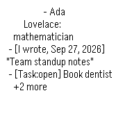

Your Memory, on your wrist.
Your AI remembers, because it's yours. Recall and search it from your Pebble. Every request goes to the Memory you host.
Developer preview. Not yet available to install. Ask in the Discord for access.
Companion Memory installs from Companion Hub. Preview the setup or read the docs.

What you need
The Pebble app is the wrist. Your Companion Memory is where the answers come from. The app is a developer preview with no public download or store listing yet. To ask about access or follow progress, join the Discord.
A Companion Memory you host
The app talks to your Companion Memory. Today it installs from Companion Hub, which runs on any machine.
Download CompanionCompanion Core
Personal AI server. Self-hosted AI, private memory, and a personal app store on hardware you control.
Buy Companion CoreA Pebble and its phone app
The watchapp targets all five Pebble platforms. You also need the Pebble phone app for your watch.
developer previewThree taps to what you already know.
The watch never touches the network. It asks your phone, your phone asks your Memory, and the answer comes back to your wrist with a short buzz.
Recall
The latest from your Memory, in one press. No typing, no menus to dig through.
memory scopeAsk
Pick a question or speak your own. Your Memory searches what you saved and returns the lines that match.
memory scopeLast answer
Your latest answer stays on the watch, so it is there when you are offline.
no key neededWorks on five Pebble platforms.
Speak needs a microphone. Pebble Classic and Steel do not have one, so on those you pick from the listed questions.
| Platform | Watches | Speak (dictation) |
|---|---|---|
| Aplite | Pebble Classic and Steel | No microphone. Pick a listed question. |
| Basalt | Pebble Time and Time Steel | Yes |
| Chalk | Pebble Time Round | Yes |
| Diorite | Pebble 2 | Yes |
| Emery | Pebble Time 2 | Yes |
One path. Nothing else in the loop.
The app talks to your Companion Memory and only your Companion Memory. What your Memory does with Companion Hub or its own models stays inside your machine.
- Pebblethe watch app
- Bluetooth
- Your phonePebbleKit companion
- HTTPS + key
- Companion Memorythe Memory you host
- Never contacted by this app: Ollama and Companion Hub.
Setup, for preview testers.
These steps are for people who have access to the app's source, because the Pebble app is a developer preview. You need a running Companion Memory and a Pebble.
Create an API key
In Companion Memory, open Settings, API keys, and create one with the
memoryscope. Test it from any terminal:curl -X POST https://your-memory.example/api/memory/recall \ -H "x-api-key: YOUR_KEY" -H "Content-Type: application/json" \ -d '{"query": "what happened recently?", "maxResults": 3}'Build the watch app
In CloudPebble, import the watchapp's source repository (you need access to it) and press Compile. Or locally:
uv tool install pebble-tool pebble sdk install latest npm run buildInstall it
Send the build to your watch from CloudPebble, or try it first in the emulator with
pebble install --emulator basalt.Connect your Memory
In the Pebble phone app, open Companion Memory settings. Enter your Memory URL and the key. Save, and the app checks the connection and tells you what works.
Give the key only what it needs.
Companion Memory denies a scoped key on any route that does not name its scope. That is a good default, and it decides what each feature can do today.
| Feature | Key it needs |
|---|---|
| Recall and Ask | memory scope |
| Register this watch as a device | Unrestricted key. Device routes have no scope yet. |
| Location sync (off by default) | Unrestricted key. Position routes have no scope yet. |
The planned features below are not in v1.0. They would need a memory key with write access (Recorder) and an intents scope (Planner).
Your data. Your Memory. Nothing in between.
- Requests go from your phone straight to the Memory URL you enter. There is no relay and no account.
- The API key lives on your phone. The settings page is a local page, so the key never touches a web server.
- Location sync is off until you turn it on, and it only ever goes to your Memory.
- The app has no analytics and no third party. One exception is outside our hands: if you speak a question, Pebble Dictation is a cloud speech service, so that audio goes to the speech service your Pebble platform uses. Picking a listed question sends no audio anywhere.
- This website, not the app, uses Google Analytics and Cloudflare Web Analytics. See the Companion Intelligence privacy policy.
Planned, not in v1.0.
Companion Memory for Pebble reads your Memory today. These ideas are on the roadmap, not in the app, and nothing here is a promise of a date.
Recorder
Speak a note on your wrist. It lands in your Memory as text you can search.
plannedPlanner
See what is due, add a task by voice, mark it done.
plannedReminders on your wrist
Due reminders arrive as timeline pins, even when the phone app is asleep.
plannedA bridge on Companion Hub
An installable app that pairs your phone and pushes reminders to it.
planned